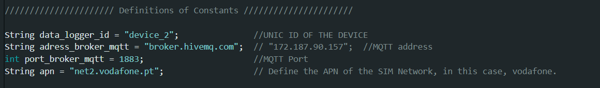
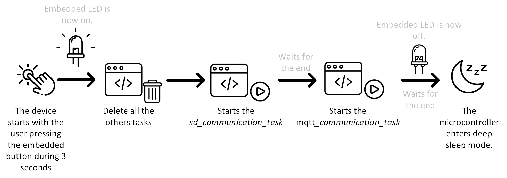

Data Logger Project
Overview
This repository contains the implementation of a data logger project designed for real-time and remote data acquisition during the shipment of products. The project includes scripts for data processing, device software, and a web interface for data visualization and control.
Repository Structure
- Back-End Scripts: Scripts for data processing and storage.
- Device Software (Microcontroller): Code for the microcontroller used in the data logging device.
- Django Web-Framework: Web application framework for interfacing with the data logger.
- Tests and Results: Testing scripts and result logs.
- PCB Project: KiCad Project of the PCB for the prototype.
Description of the Implemented Solution
The data logger system uses the ESP32-E Firebeetle 2 microcontroller as the main unit. It works with several sensors to meet the project's requirements:
- Vibration and Impact Monitoring: Uses the IAM-20680 accelerometer and gyroscope.
- Environmental Monitoring: Uses the BME680 sensor to measure temperature, humidity, and pressure. Both sensors communicate with the microcontroller using the I2C protocol.
- Data Storage: Uses a PMod microSD reader module, which communicates via the SPI protocol, for local data storage.
- Mobile Communication and GPS: Uses the Ai-Thinker A9G module for mobile network communication and GPS tracking, interfacing via the UART protocol.
Data is sent using the MQTT protocol. Back-end scripts receive this data, convert it to JSON format, and send it to the Django web framework using HTTP Post requests.
Django Web Platform
The Django framework manages the data and web platform, providing features such as:
- Data Storage: Uses an SQLite database to store user information, trip details, configurations, and data file paths.
- Interactive Visualization: Uses JavaScript libraries like Highcharts for graphs and Leaflet for maps to show dynamic data on the trip monitoring page.

Data Acquisition
A prototype was made with a PCB (KiCad Project), as shown in the next picture. This solution has one I2C connector with a Groove connector for the BME680 sensor. Two more I2C connectors are used, each with a TE Connectivity 1744418-4 connector with a 2.5mm pitch. Two SPI connectors have been added. One is for the microSD module, while the other is for the CS pin linked to GPIO 35 (A3) of the ESP32. The latter connector uses the TE Connectivity 1744418-6 with a 2.5mm pitch. This lets you add or try out other sensors. The design also has extra pins for GND, 3V3, and VCC, as well as two ESP32 serial port pins and extra free GPIOs, all marked on the PCB.
Microcontroller Program
The microcontroller program is developed using the ESP32 microcontroller and various sensors to monitor parameters such as temperature, humidity, pressure, impacts, vibration, and location. The code is structured into tasks that handle sensor readings, data storage, and communication with the web platform via MQTT.
Key Components:
-
ESP32 Microcontroller: Handles sensor integration and data processing.
-
Sensors: Include BME680 for environmental data, IMU for motion data, and the Ai-Thinker A9G for location tracking and communication.
-
SD Card: Certain SD cards are occasionally unrecognised by the device. To ascertain the functionality of an SD card, connect the device to a computer and open a serial port. During the initialisation process, the system will indicate whether the SD card is recognisable. If the card is recognised, the available memory will be displayed. It is crucial to format the SD card using the FAT32 file system to ensure proper operation. Among the tested SD cards, the Kingston CANVAS Select Plus models with capacities of 32GB and 64GB (class 10) have proven to be reliable.
-
SIM Card: The device is configured to utilise a SIM plan card for communication via a 2G network to access the internet. The SIM operator employed in this instance is Vodafone Portugal, with the Access Point Name (APN) specified as
net2.vodafone.pt.It is crucial to note that if a different SIM operator is used, it is necessary to modify the APN configuration within the hardware programme to match the new operator's APN. Furthermore, it is imperative to disable the PIN on the SIM card, as the device lacks the capability to handle PIN entry. This functionality must be implemented to avoid potential security vulnerabilities.
Running the Microcontroller Program:
-
Set Up the Development Environment:
- Install the necessary tools and libraries for ESP32 development.
- Use the Arduino IDE or PlatformIO for code uploading.
-
Upload the Code:
- Connect the ESP32 to your computer.
- Compile and upload the code from the
microcontrollerdirectory.
For initial configurations, the device is pre-configured with specific settings, such as a unique identifier, the initial MQTT address and port, and the APN for network connectivity. This can be encounter on the PogV8.ino file.

If you do not wish to use the remote configuration feature, you can manually define each configuration below in the Definitions of Global Variables of the Program section. To do this, you will need to set the remote_configuration variable to false.

In the case of remote configuration, if a configuration file is present, the system variables are set according to the specifications outlined in the JSON document created in the "Create Trip" webpage. If the internal memory does not contain a configuration file, the A9G module is activated and configured. This module subscribes to the "config" topic on the MQTT broker and awaits the receipt of the JSON file for up to 60 seconds. During this interval, the embedded LED on the microcontroller is programmed to blink at 500 ms intervals. The user must access the Devices Manager webpage and then press the button "Send Configuration."
Upon receipt of a file, the device proceeds to process it and verify whether the JSON file’s device ID matches the ID coded into the device. Each device ID is unique. If the IDs match, the device sets all global variables and copies the JSON file to the internal memory. Once the configuration is complete, the LED remains illuminated for three seconds before turning off. This signifies the setup process is finished and the system is ready for operation.
The end mode, represented in Figure 4.13, is initiated when the user presses the embedded button on the microcontroller for a period of three seconds, thereby initiating the procedure and activating the embedded LED.

Data Processing and Visualization
The data processing and visualization for the data logger system is managed through a series of scripts and a Django-based web platform. The system architecture and the functions of each script are described below.
System Architecture
-
Data Acquisition:
- The data logger devices collect data on temperature, humidity, pressure, impacts, vibration, and location.
- This data is transmitted to the MQTT Broker (Mosquitto) using the MQTT protocol.
-
Data Processing:
- Script Data Receiver: Subscribes to the MQTT topics to receive data from the data loggers.
- Script Data Processing: Processes the raw data, converts it into JSON format, and prepares it for storage and visualization.
- Script Remote Configuration: Publishes configuration settings to the data loggers.
-
Data Storage and Management:
- The processed data is stored in an SQLite database, which keeps information about users, trips, trip configurations, and data file paths.
- Additional processing by Script Data PSD Processing converts the raw data for FFT segments into Power Spectral Density (PSD) format for further analysis in the web platform.
-
Web Framework (Django):
- Views.py: Handles HTTP requests and returns responses to the client. It interacts with the models and templates to fetch and display data.
- Models.py: Defines the database schema and interacts with the SQLite database to retrieve and store data.
- Urls.py: Maps URLs to the corresponding views, enabling navigation within the web application.
- Templates: HTML files that render the data into user-friendly web pages.
-
Visualization:
- The web platform uses JavaScript libraries such as Highcharts and Leaflet for interactive data visualization.
- Highcharts: Generates interactive graphs to display real-time and historical data on environmental conditions and impacts.
- Leaflet: Provides map visualizations with recorded GPS points for tracking the location of shipments.
Process Flow
- Data is continuously collected by the data loggers and transmitted via MQTT.
- The Script Data Receiver listens for incoming data and passes it to the Script Data Processing.
- Processed data is stored in the SQLite database and can be accessed through the Django web platform.
- Users can interact with the platform to configure devices, monitor ongoing trips, and visualize data through dynamic graphs and maps.

Running the Server
When setting up the server, three key considerations must be addressed:
-
MQTT Server Configuration: Although it is possible to use an external MQTT server, such as broker.hivemq.com or broker.emqx.io, it is advisable to install and configure Eclipse Mosquitto on the server to ensure greater system reliability. Additionally, Port 1883 should be opened for public access.
-
Script Data Receiver: Ensure that the Script Data Receiver (Python Script) is running continuously. This script is designed to operate without interruption and includes error-handling mechanisms to facilitate automatic rebooting. It is important to configure the MQTT address and port at the beginning of the program.
-
Django Web Framework Configuration: Properly configure the Django web framework. Detailed instructions for configuring Django will be provided in the subsequent section.
Running the Django Web-Framework
-
Clone the Repository:
git clone https://github.com/jorgeedribeiro2001/data_logger_project.git cd data_logger_project -
Install Dependencies:
- For Python components, use the requirements file:
pip install -r requirements.txt
- For Python components, use the requirements file:
-
Run the Django Application:
- Navigate to the Django project directory:
cd django_project - Apply migrations:
python manage.py migrate - Create a superuser to access the admin interface:
python manage.py createsuperuser - Start the development server:
python manage.py runserver - Access the application at
http://127.0.0.1:8000/.
- Navigate to the Django project directory:
For running for the internet make sure that you have an Public IP and a port available to public. For running on the port you can:
python manage.py runserver 0.0.0.0:8000
It is notable that the platform was not developed for public porposes and not went with any security concerns.
To run the Django application over the internet, ensure you have a public IP address and an available port. Follow these steps to run the application:
-
Open the Server to External Access:
Run the Django development server with the following command to make it accessible over the internet:python manage.py runserver 0.0.0.0:8000 -
Public IP and Port:
- Ensure your server's firewall allows traffic on the specified port (e.g., 8000).
- Configure your router to forward incoming traffic on this port to your server if running behind a NAT.
-
Security Considerations:
- This platform was developed for demonstration purposes and internal use only.
- It lacks security features necessary for a public-facing application.
- If you intend to make this application accessible over the internet, implement proper security measures such as HTTPS, firewalls, authentication, and regular security audits.
-
Deployment Recommendations:
- For production deployment, use a robust web server like Nginx or Apache as a reverse proxy.
- Consider using a WSGI server like Gunicorn or uWSGI to serve the Django application.
- Set up SSL/TLS certificates for secure HTTPS connections.
Graphical Interface
The graphical interface of the data logger system includes several user-accessible pages designed as adaptable templates. These templates ensure that the HTML pages dynamically respond to user requests. For instance, when a user monitors a trip, the page's structure and elements adjust automatically to display the specific trip data selected by the user. Below is a visual representation of the hierarchical structure of these pages:

Figure: Web Pages Interaction Diagram
Page Descriptions
User Login Page
The user login page is the primary access point for users. It features a straightforward interface where users can enter their credentials. Upon successful login, users are redirected to the appropriate dashboard. Administrators can also access the administrative platform from this page.

Figure: User Login Layout
Administrator Platform
This platform is accessible only to administrators. It provides comprehensive data access and user management capabilities, allowing administrators to manage users, modify values in the SQLite database, and oversee data collected by the devices.

Figure: Administrator Platform Layout
Device Manager Page
Upon logging in, users are redirected to the Device Manager page. This page can also be accessed via the menu bar. It requires user authentication and displays the devices added by the user. Administrators can view all devices. Users can see device status, end trips, configure devices remotely, and view logs.
Figure: Device Manager Page Layout
Create Trip Page
This page allows users to create a new trip and configure the associated device settings. Users can navigate to this page via the menu bar or through a specific link. They can define the trip name, select an available data logger, and set the start date. Configuration parameters can be set, and a JSON file can be generated for saving on the user's computer.

Figure: Create Trip Page Layout
Select Trip Page
The Select Trip page allows users to view and select from a list of their trips. Users can delete a trip or proceed to monitor it. This page is accessible via the menu bar and requires user authentication.
Figure: Select Trip Page Layout
Monitoring Trip Page
This page is crucial for data analysis and visualization. It is divided into sections for general trip details, BME data (temperature, humidity, pressure), IMU data (impact, vibration), and location data. Each section provides detailed analysis and interactive graphs.

Figure: Monitoring Page: Trip Details and BME Data Sections Layout

Figure: Monitoring Page: IMU Data Section Layout
Figure: Monitoring Page: Location Section Layout
JavaScript Libraries
The interactive graphs and maps are created using the Highcharts and Leaflet JavaScript libraries. Highcharts is used for generating interactive graphs, while Leaflet is used for creating interactive maps with recorded position points. These tools provide dynamic visualization of the data collected by the data logger devices.
This graphical interface ensures a user-friendly and efficient way to manage devices, create and monitor trips, and visualize data for analysis, making it a vital part of the data logger system.
Troubleshooting
When I turn on the device, the light is always on indefinitely.
This issue may arise due to initialization errors, often related to inaccessible sensors or the communication module's inability to connect to the network for remote configuration or microSD incompatibility. To troubleshoot, follow these steps:
- Verify that all sensor connections are secure.
- Ensure a compatible microSD card is in place.
- Confirm that the SIM card is functioning correctly.
- Check that the MQTT settings are properly configured.
To determine the specific cause, connect the device to a computer, open a serial port, and restart the device. This will display initialization information on the serial port. The baud rate should be set to 115200 bps.
The remote configuration does not work (the light keeps blinking after I click the Send Configuration button on the web platform).
This issue may be attributed to improper configuration of the MQTT server settings. Ensure that the device is configured with the correct MQTT broker address and port. Additionally, verify that the appropriate settings have been entered on the Create Trip webpage.
Despite the device being deployed in the field, the web platform is not receiving or displaying updated data.
Verify if the script data receiver is running with the correct MQTT configurations. Additionally, check if the issue is isolated to a single device or affects multiple devices. Examine the last communication timestamp of the device and ensure that the trip configurations have the communication interval set correctly. If all these aspects are in order, contact the repository owner for further assistance. Remember that the device communication might be skipped during the programmed interval but will resume in the subsequent interval.
License
This project is licensed under the GNU General Public License v3.0.
Contact
For any queries, contact the repository owner on LinkedIn page: https://www.linkedin.com/in/jorgeedribeiro/